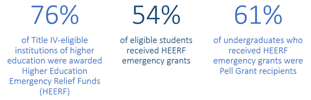

Origins of the Higher Education Emergency Relief Fund
The COVID-19 pandemic has highlighted and exacerbated disparities across the nation, including those in the higher education sector. During this unprecedented time, students who were enrolled in colleges, universities, and trade schools across the country faced adversity in a variety of ways. For instance, according to a recent National Center for Education Statistics (NCES) report, 88 percent of postsecondary students reported experiencing a disruption or change in their enrollment due to the pandemic, and 40 percent of undergraduates experienced a financial disruption or change due to the pandemic, such as losing a job or lost income due to reduced work hours. Further, at the onset of the pandemic, many students lacked reliable access to basic internet services, technological devices, and other supports that are key components to a successful remote learning experience.
In response to the pandemic and its impact on higher education, Congress created the Higher Education Emergency Relief Fund (HEERF) program, part of the Education Stabilization Fund (ESF) that the U.S. Department of Education (Department) administers. HEERF includes both a student portion and an institutional portion of funds. The student portion of HEERF provides funds to institutions of higher education to disburse emergency financial aid grants directly to students with immediate needs arising from the disruption of education due to the COVID-19 crisis. In 2020, the institutional portion could be used by institutions to cover costs associated with significant changes to the delivery of instruction due to COVID-19, or to provide additional financial aid grants directly to students.
The Coronavirus Aid, Relief, and Economic Security Act (CARES) Act established the first round of HEERF funding by providing $14 billion to an emergency relief fund for higher education in March 2020. More than three-quarters (76%)* of Title IV-eligible institutions of higher education received CARES Act awards through HEERF in 2020. Subsequently, institutions are required to submit annual performance reports to the Department detailing the use of funds earmarked for both student grants and institutional expenditures. Below, we highlight some key insights gleaned from the first annual report for HEERF, which covers CARES Act spending from the period between March 13, 2020, and December 31, 2020.
*CARES Act HEERF grants were awarded to institutions based on a formula established in Section 18004(a)(1) of the CARES Act. The remaining 24% of Title IV-eligible higher education institutions either did not apply for a HEERF grant prior to the September 30, 2020, application deadline for HEERF awards, were not eligible for funding based on the formula set in the statute, or voluntarily returned awards to the Department.
How HEERF Has Supported Students Directly
Overall, institutions reported that 8.1 million students—amounting to 54% of all eligible students—received emergency financial aid grant support in 2020 through HEERF. From the student portion of HEERF in 2020, institutions awarded $6.1 billion in emergency financial aid grants, or more than $750 per student recipient. Of the emergency grant recipients awarded via HEERF’s student portion, 94% were undergraduates and 6% were graduate students. Among those undergraduates who received HEERF aid, more than 4.5 million (61%) were Pell Grant recipients. Because the Pell Grant program primarily serves undergraduates with exceptional financial need, these data indicate that most of the HEERF emergency financial aid grants were awarded to students who were financially vulnerable even prior to the pandemic.
How HEERF Has Supported Institutions
The institutional portion of HEERF supported a variety of needs in 2020. The greatest portion of institutional funds (at least $1.7 billion) was used to cover reimbursements of tuition, housing, room and board, and other fee refunds. From these institutional funds, colleges and universities also provided at least $286 million in additional emergency financial aid grants directly to students. Beyond these two broad uses of funds, other uses of the institutional portion include:
- $802 million for online technology and training, including software and training for distance learning and laptops and tablets for students;
- $492 million for campus safety and operations, including expenses for cleaning activities and additional class sections to allow for social distancing;
- $246 million to replace lost revenue due to reduced enrollment and other sources of revenue;
- $84 million in additional student supports, such as subsidizing food service and off-campus housing;
- $30 million in tuition discounts; and
- $397 million for other purposes.
Relative spending in each of these categories varied somewhat by institutional control, as shown in the figure below. For example, private not-for-profit institutions reported spending the greatest share on additional student supports and replacing lost revenue. Meanwhile, private for-profit institutions reported spending the highest share of funds on campus safety and operations and online technology and training.
Ut iaculis interdum ante, eu posuere sapien rutrum in. Vivamus at est nec libero fermentum efficitur. Fusce libero ex, iaculis ac risus vel, congue vestibulum augue. Quisque vel imperdiet quam, ac fermentum libero. Fusce ultricies varius risus et faucibus. Curabitur interdum, magna sit amet dapibus posuere, sem massa hendrerit felis.
Posuere sapien rutrum in. Vivamus at est nec libero fermentum efficitur. Fusce libero ex, iaculis ac risus vel, congue vestibulum augue. Quisque vel imperdiet quam, ac fermentum libero. Fusce ultricies varius risus et faucibus. Curabitur interdum, magna sit amet dapibus posuere, sem massa hendrerit.
Ongoing HEERF Support
Challenges related to COVID-19 remain, and HEERF continues to support postsecondary students and their institutions. Additional funding was provided to postsecondary institutions in late 2020 and March 2021 respectively through the Coronavirus Response and Relief Supplemental Appropriations (CRRSA) Act, and the American Rescue Plan (ARP). Collectively, the CARES Act, CRRSA Act, and ARP Act funding for higher education (also known as HEERF I, II, and III) total approximately $76 billion, $30 billion of which is required to be disbursed directly to students in the form of emergency financial aid grants.
To best serve students during this challenging time, the Department encourages institutions to continue to prioritize the financial needs of their students, by first awarding students with exceptional need. The Department will continue to collect data and monitor how institutions choose to distribute emergency financial aid grants to students and allocate institutional funds to key recovery and sustainment activities through future annual reporting cycles. To view or download more detailed data from the 2020 CARES Act annual performance report, visit the ESF Public Transparency Portal at https://covid-relief-data.ed.gov/.